Construímos marcas. E damos a elas onde viver.
Filmes institucionais, comerciais, VSLs e conteúdo de marca com padrão de cinema, da direção ao frame final.
Campanhas pagas em Google, Meta e TikTok com estratégia de funil e otimização orientada a retorno.
Planejamento, conteúdo e gestão de redes com identidade forte e calendário estratégico.
Sites institucionais e páginas de campanha com foco em conversão e performance.
Filmagem aérea com pilotos certificados.
Ensaios de marca, produto e evento com direção de arte e pós apurada.
Aftermovie do maior encontro de food trucks do Centro-Oeste.
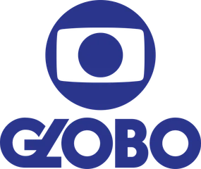
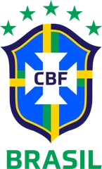
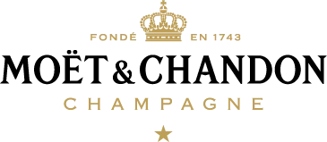
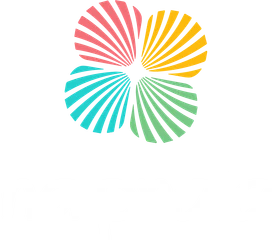
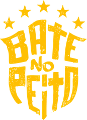
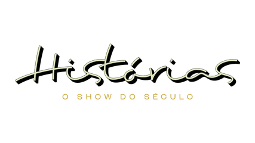
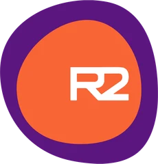
Menos projetos. Atenção inteira em cada um.
Cada entrega passa pela mesma régua, do aftermovie ao filme institucional.
Nem toda conversa vira projeto. As que viram partilham a mesma exigência.
O que muda de um projeto para outro é o cenário, não o padrão.
Tempo suficiente para saber o que funciona, e curto para não acomodar.
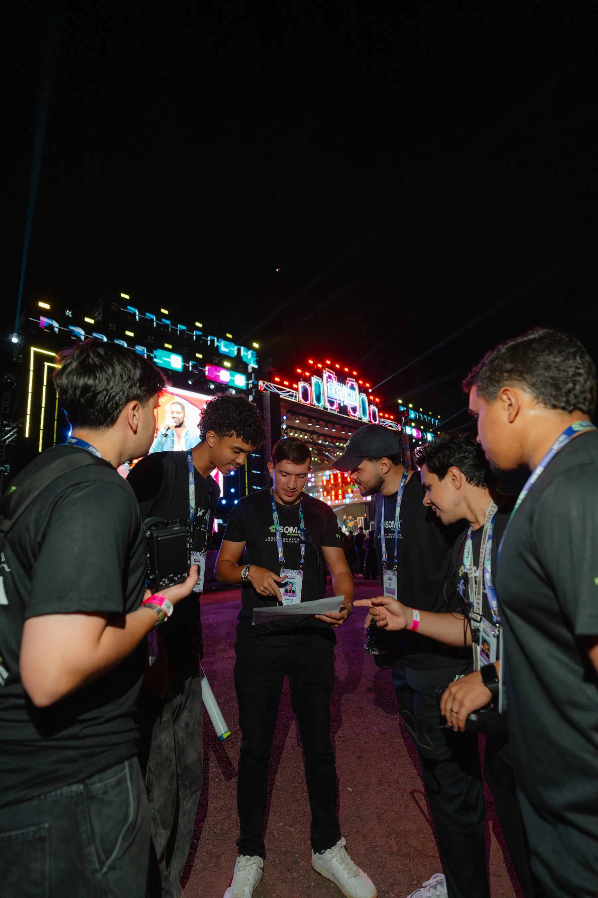
Ninguém dirigede longe.
O plano a gente fecha no local,
junto de quem vai segurar a câmera.
Showreel 2025 · 4K · LOG3 · 24fps
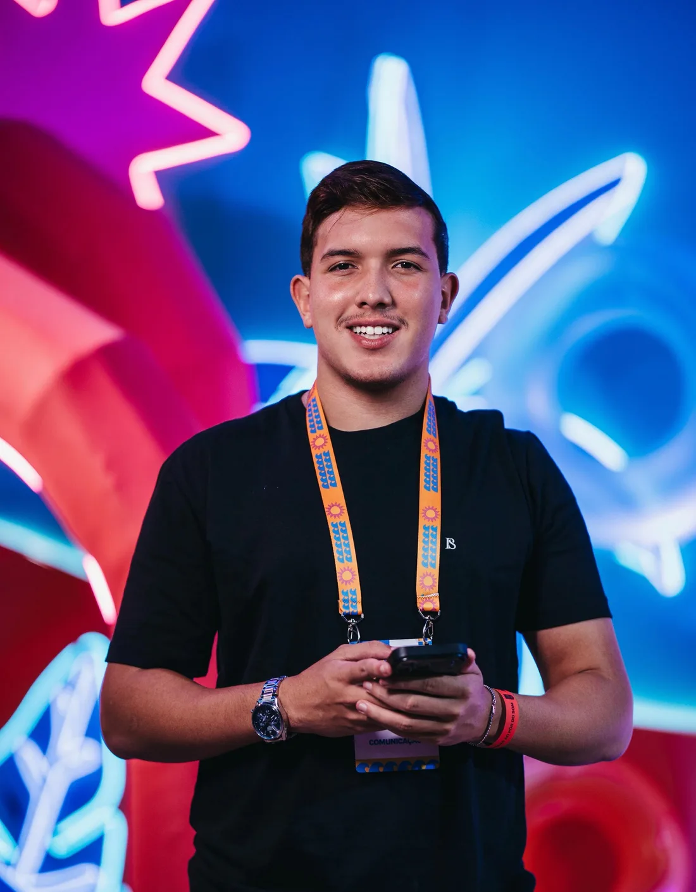
CEO da SOMA
Está em todo set que a SOMA assina, dirigindo de perto. O material sai com a cara de quem estava lá.
@films_daviNão começamos com respostas. Começamos com as perguntas certas.
Estudamos a marca, a audiência e o mercado antes de qualquer decisão.
A ideia central que vai orientar cada escolha visual, testada antes de virar design.
Câmera de cinema e equipe experiente, do primeiro ao último take.
Conteúdo finalizado e otimizado por plataforma. Sai quando está pronto.
As pessoas por trás de cada projeto.
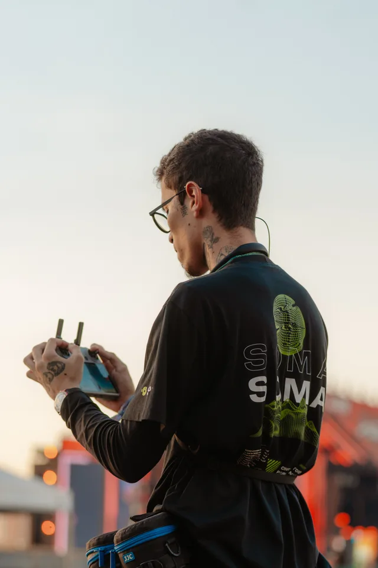
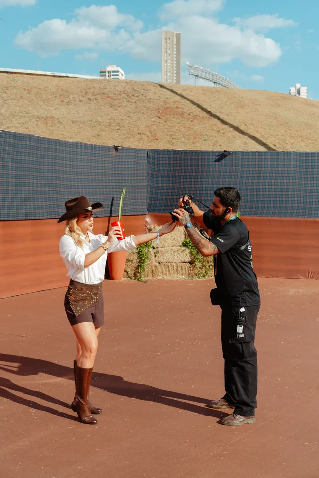
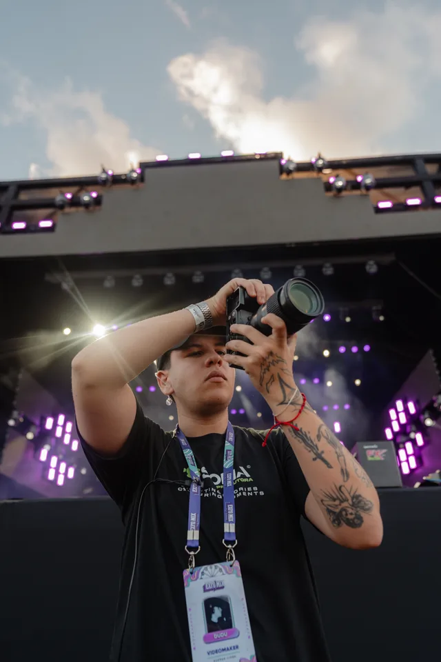
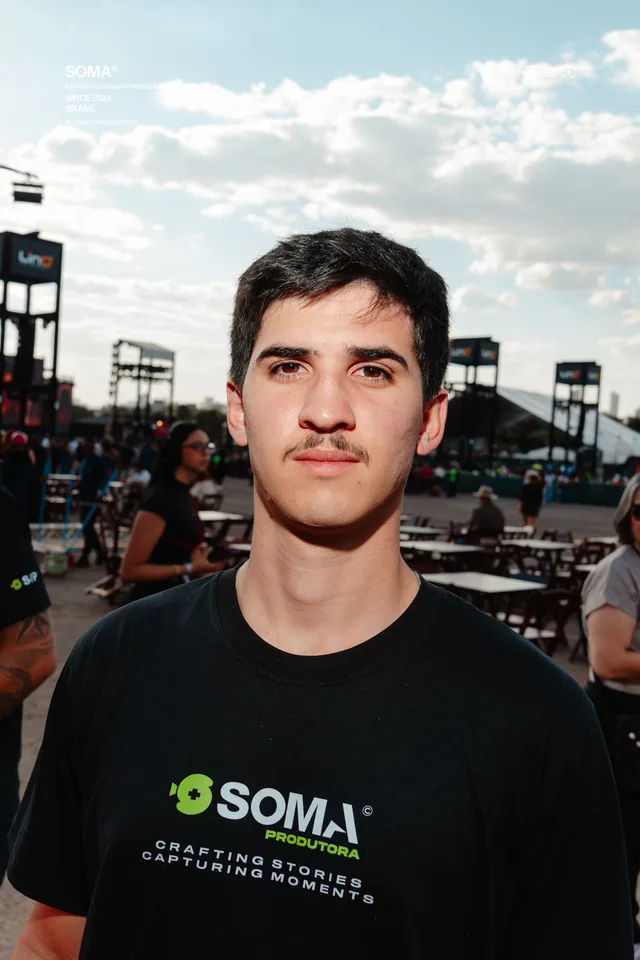
O que você precisa saber antes de começarmos.
Depende do escopo. Um aftermovie de evento sai em dias; uma campanha completa leva de 4 a 8 semanas. Definimos o prazo na imersão, antes de começar.
Sim. Já produzimos em 6 países e viajamos para onde o projeto pedir. Boa parte do nosso trabalho acontece fora do DF.
Não. Audiovisual é a origem, mas entregamos também tráfego pago, social media, sites, drone e fotografia, normalmente integrados na mesma campanha.
Cada projeto é orçado a partir do escopo definido na imersão. Sem pacote fechado antes de entender o problema.
A SOMA nasceu cobrindo evento em Brasília, em 2019. Quem grava aqui é a mesma equipe que cuida do tráfego, do social e do site onde o filme vai parar.
Vídeo bonito que morre num feed sem estratégia não serve para nada. E estratégia certa com material que não segura o olho nos primeiros três segundos também não.
A gente trata as duas pontas como uma coisa só. É por isso que o resultado aparece fora da tela.
Brasília, DF Crafting stories · Capturing moments
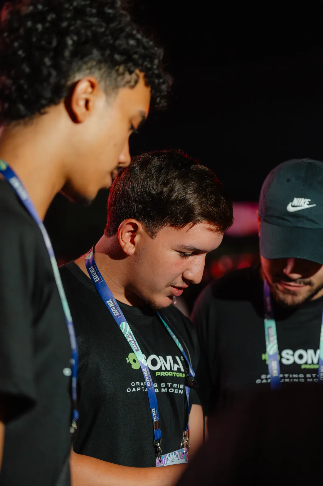